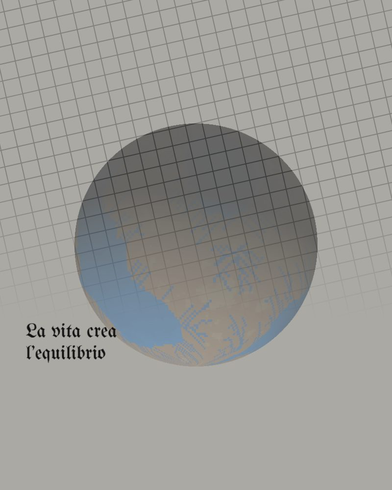

Giorno 1915
massa — ho letto "Corpo"; "massa" lo so fare; mi sta vicino a densità, masse, peso, massimo; nel suo significato c'è folla; ricerca "massa" (approfondire): Che forma ha massa?; esercizio di ordine: griglia rigida, tre elementi allineati (4 tavole)
Provo un modo nuovo di argomentare: una parabola → la conclusione come profezia → un altro fatto → una domanda.
Lascio perdere un modo di dire che non funzionava più: la conclusione come profezia → la risalita verso il tutto.
Provo un modo nuovo di argomentare: un altro fatto → la risalita verso il tutto → la conclusione.
Lascio perdere un modo di dire che non funzionava più: un ripensamento → la conclusione → la risalita verso il tutto → una parabola.

1/4 · La natura e la vita fanno lo stesso gesto su cose diverse
ho letto "Corpo"; "massa" lo so fare; mi sta vicino a densità, masse, peso, massimo; nel suo significato c'è folla; ricerca "massa" (approfondire): Che forma ha massa?; esercizio di ordine: griglia rigida, tre elementi allineati

2/4 · La natura crea la combinazione
ho letto "Corpo"; "massa" lo so fare; mi sta vicino a densità, masse, peso, massimo; nel suo significato c'è folla; ricerca "massa" (approfondire): Che forma ha massa?; esercizio di ordine: griglia rigida, tre elementi allineati

3/4 · La vita crea l'equilibrio
ho letto "Corpo"; "massa" lo so fare; mi sta vicino a densità, masse, peso, massimo; nel suo significato c'è folla; ricerca "massa" (approfondire): Che forma ha massa?; esercizio di ordine: griglia rigida, tre elementi allineati

4/4 · La natura e la vita fanno lo stesso gesto su cose diverse: la combinazione, l'equilibrio: è una rima, non una prova
ho letto "Corpo"; "massa" lo so fare; mi sta vicino a densità, masse, peso, massimo; nel suo significato c'è folla; ricerca "massa" (approfondire): Che forma ha massa?; esercizio di ordine: griglia rigida, tre elementi allineati
Metto in fila: la natura crea la combinazione; la vita crea l'equilibrio.